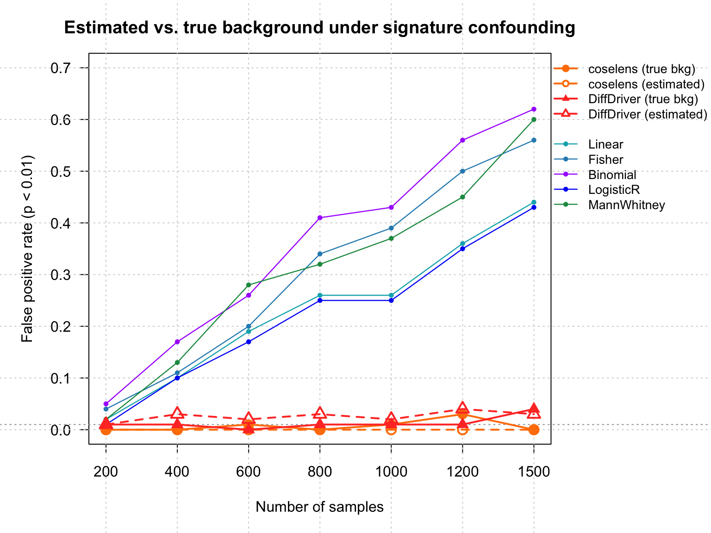

Last updated: 2026-07-22
Checks: 6 1
Knit directory: DiffDriver-PAPER/
This reproducible R Markdown analysis was created with workflowr (version 1.7.1). The Checks tab describes the reproducibility checks that were applied when the results were created. The Past versions tab lists the development history.
The R Markdown is untracked by Git. To know which version of the R
Markdown file created these results, you’ll want to first commit it to
the Git repo. If you’re still working on the analysis, you can ignore
this warning. When you’re finished, you can run
wflow_publish to commit the R Markdown file and build the
HTML.
Great job! The global environment was empty. Objects defined in the global environment can affect the analysis in your R Markdown file in unknown ways. For reproduciblity it’s best to always run the code in an empty environment.
The command set.seed(20260206) was run prior to running
the code in the R Markdown file. Setting a seed ensures that any results
that rely on randomness, e.g. subsampling or permutations, are
reproducible.
Great job! Recording the operating system, R version, and package versions is critical for reproducibility.
Nice! There were no cached chunks for this analysis, so you can be confident that you successfully produced the results during this run.
Great job! Using relative paths to the files within your workflowr project makes it easier to run your code on other machines.
Great! You are using Git for version control. Tracking code development and connecting the code version to the results is critical for reproducibility.
The results in this page were generated with repository version 70f490c. See the Past versions tab to see a history of the changes made to the R Markdown and HTML files.
Note that you need to be careful to ensure that all relevant files for
the analysis have been committed to Git prior to generating the results
(you can use wflow_publish or
wflow_git_commit). workflowr only checks the R Markdown
file, but you know if there are other scripts or data files that it
depends on. Below is the status of the Git repository when the results
were generated:
Ignored files:
Ignored: .DS_Store
Ignored: .claude/
Ignored: analysis/.Rhistory
Ignored: code/.Rhistory
Ignored: data/.DS_Store
Untracked files:
Untracked: analysis/Simulation-BMR-estimated.Rmd
Untracked: code/simulate_silent_estimate.R
Untracked: data/Lsyn.rds
Untracked: data/pppower_estimatedBMR_bmr.Rd
Untracked: data/sgannosig.Rd
Untracked: data/sgmatrixsig.Rd
Unstaged changes:
Modified: analysis/index.Rmd
Note that any generated files, e.g. HTML, png, CSS, etc., are not included in this status report because it is ok for generated content to have uncommitted changes.
There are no past versions. Publish this analysis with
wflow_publish() to start tracking its development.
This is a stricter version of the phenotype–signature confounding simulation. The setup is identical — the phenotype correlates with a mutational signature (LUAD signature 3, \(R^2 = 0.78\)) but has zero correlation with selection, and mutations are simulated for a single gene (ERBB3) with hotspots at the signature’s peak context (nucleotide type 34) — so any detection is a false positive.
The difference is how the two background-modeling methods obtain the background mutation rate:
fastTopics on the 96 × N count matrix,
exactly as diffdriver::matrixlistToBMR does) to recover the
per-sample per-context spectrum.N_syn / Lsyn96 per group — which
is exactly the Poisson fit dndscv performs; this rate is
fed to dndscv_truerate.The question is whether estimating the background from a finite, confounded silent spectrum still controls the false positive rate the way the true rate did.
The silent count matrix is not arbitrary — it is simulated from a realistic LUAD background:
\[Y[c,s] \sim \text{Poisson}\big(\text{Lsyn96}[c]\cdot \text{bmr}[c,s]\cdot g\big),\]
where
bmr = (signatures %*% loadings) / sc
uses the real LUAD mutational signatures (96 × 6) and
per-sample loadings (ll$LUAD), so the spectrum shape is
exactly LUAD’s; the mean per-site probability is ≈ 1.8 × 10⁻⁶.Lsyn96 is the number of synonymous
sites per trinucleotide context (from dndscv’s RefCDS;
data/Lsyn.rds), ≈ 23.3 M sites genome-wide.g calibrates the mean per-sample
synonymous burden to the observed LUAD burden of ≈ 64 synonymous
mutations per sample (530 TCGA-LUAD samples, from
LUAD_mutations.txt annotated with dndscv).Crucially, the true bmr (with sc = 359000)
already produces ≈ 63 synonymous mutations per sample, so
g = 64.2 / 63 ≈ 1.02 — essentially 1. The
silent count matrix and the ERBB3 mutations therefore share one
realistic LUAD-scale background, with no rescaling needed.
Both methods were run on the same simulated cohorts as the true-background simulation (the cohort RNG stream is frozen around the estimation step, so the per-iteration mutation counts are identical).
The estimated-background helpers are in code/simulate_silent_estimate.R:
build_silent_matrix() (the LUAD-calibrated silent count
matrix), coselens_estimated_rate()
(N_syn/Lsyn96 per group → dndscv_truerate),
and diffdriver_estimated_mr() (fastTopics spectrum →
per-site log-background). Per iteration:
source("code/simulate_functions.R"); source("code/simulate_silent_estimate.R")
source("code/run_coselens.R"); source("code/dndscv_truerate.R")
library(diffdriver); library(coselens)
load("data/bmr_sim_inputs.rda"); load("data/hmm.rda")
load("data/codeSignature.rda"); load("data/hotspot1sig.rda")
cm <- readRDS("data/context96_map.rds"); Lsyn96 <- readRDS("data/Lsyn.rds")$Lsyn96
sim <- simulate_confounding(binary = TRUE, sganno = bmr_sim$sganno,
sgmatrix = bmr_sim$sgmatrix, Nsample = 1500, para = c(0.5, 0.5),
beta_gc = bmr_sim$beta_gc, signatures = bmr_sim$signature, loadings = bmr_sim$ll,
rho = sqrt(0.78), hot = 1, hmm = hmm, sc = 359000)
bmr <- sim$bmrfold$bmr; e <- sim$pheno; g1 <- which(e == 1); g2 <- which(e == 0)
maf <- sim_to_maf(sim$mutlist, sim$annodata, e)
Y <- build_silent_matrix(bmr, Lsyn96, target_silent = 64.2) # ~64 syn/sample
# coselens: estimated per-group rate from the silent counts
mr1 <- coselens_estimated_rate(Y, g1, Lsyn96, cm)
mr2 <- coselens_estimated_rate(Y, g2, Lsyn96, cm)
cos <- run_coselens(maf$group1, maf$group2, subset.genes.by = "ERBB3",
true_rate = list(mutrates1 = mr1, mutrates2 = mr2, theta = 1e6),
gene_list = "ERBB3", cv = NULL)$substitutions$pval
# DiffDriver: estimated per-site background from fastTopics(Y)
mr_est <- do.call(rbind, diffdriver_estimated_mr(Y, sim$bmrmtxlist, bmr))
dd <- ddmodel_binary(do.call(rbind, sim$mutlist), e, mr_est, sim$efsize$diffFe)$pvalueThe full benchmark loops this over Nsample = 200 … 1500
(100 iterations each) and stores the results in
data/pppower_estimatedBMR_bmr.Rd.
Both DiffDriver and coselens control the false positive rate whether they are given the true background or estimate it from the LUAD-calibrated silent count matrix (all curves stay near zero). The count-based benchmarks (Linear, Fisher, Binomial, Logistic regression, Mann-Whitney) do not use or estimate a background rate — they operate on the raw mutation counts, so the “true vs estimated” distinction does not apply to them. They are shown only for context (taken from the true-background simulation, on the same setup) and rise toward ~0.6 with sample size.
Nsim <- 100
SIZES <- c(200,400,600,800,1000,1200,1500)
load("data/pppower_estimatedBMR_bmr.Rd") # object `estBMR`, keyed by N
load("data/pppower_mannwhitney_bmr.Rd") # object `mw`
fp <- function(p) mean(p < 0.01, na.rm = TRUE)
rate <- function(field) sapply(as.character(SIZES), function(n) fp(estBMR[[n]][[field]]))
# background-modeling methods (this simulation): 4 series
cosT <- rate("coselens_true"); cosE <- rate("coselens_est")
ddT <- rate("diff_true"); ddE <- rate("diff_est")
# count-based benchmarks (for context; from the true-background sim, same setup)
lin <- fis <- bin <- lr <- mw_fp <- numeric(length(SIZES))
for (i in seq_along(SIZES)) {
N <- SIZES[i]
o <- new.env(); load(sprintf("data/bmr_archive/other/pppower_betaf0=1_sample%d_0.5_0.Rd", N), envir = o)
s <- o$simuresother
lin[i] <- fp(s$m1.pvalue); fis[i] <- fp(s$m2.pvalue); bin[i] <- fp(s$m3.pvalue); lr[i] <- fp(s$m4.pvalue)
mw_fp[i] <- fp(mw[[as.character(N)]]$mannwhitney.pvalue)
}
x <- seq_along(SIZES)
par(mar = c(5,5,3,9), xpd = NA)
plot(x, ylim = c(0,0.7), col = "white", ylab = "False positive rate (p < 0.01)",
xlab = "Number of samples", xaxt = "n", las = 1)
axis(1, at = x, labels = SIZES); grid(); abline(h = 0.01, lty = 3, col = "grey60")
# count-based (grey-ish, thin) for context
cb <- list(Linear = lin, Fisher = fis, Binomial = bin, LogisticR = lr, MannWhitney = mw_fp)
cbcol <- c("#00AFBB","#2b8cbe","#aa00ff","#0001f6","#1a9850")
for (j in seq_along(cb)) { lines(x, cb[[j]], col = cbcol[j], lwd = 1.2); points(x, cb[[j]], col = cbcol[j], pch = 20, cex = 0.9) }
# background-modeling: coselens (orange) / DiffDriver (red); true = filled/solid, est = open/dashed
lines(x, cosT, col = "#ff7f00", lwd = 2); points(x, cosT, col = "#ff7f00", pch = 19, cex = 1.4)
lines(x, cosE, col = "#ff7f00", lwd = 2, lty = 2); points(x, cosE, col = "#ff7f00", pch = 1, cex = 1.4, lwd = 2)
lines(x, ddT, col = "#FF3D2E", lwd = 2); points(x, ddT, col = "#FF3D2E", pch = 17, cex = 1.4)
lines(x, ddE, col = "#FF3D2E", lwd = 2, lty = 2); points(x, ddE, col = "#FF3D2E", pch = 2, cex = 1.4, lwd = 2)
legend(par("usr")[2], par("usr")[4], bty = "n", cex = 0.85, xjust = 0,
legend = c("coselens (true bkg)","coselens (estimated)",
"DiffDriver (true bkg)","DiffDriver (estimated)","",
"Linear","Fisher","Binomial","LogisticR","MannWhitney"),
col = c("#ff7f00","#ff7f00","#FF3D2E","#FF3D2E",NA, cbcol),
pch = c(19,1,17,2,NA, rep(20,5)),
lty = c(1,2,1,2,NA, rep(1,5)), lwd = c(2,2,2,2,NA, rep(1.2,5)))
title("Estimated vs. true background under signature confounding")
The two dashed curves (estimated background) sit right on top of their solid counterparts (true background), near zero — estimating the background from a realistic, LUAD-calibrated silent count matrix does not reintroduce the confounding, for either DiffDriver or coselens.
R version 4.3.2 (2023-10-31)
Platform: aarch64-apple-darwin20 (64-bit)
Running under: macOS Sonoma 14.6.1
Matrix products: default
BLAS: /System/Library/Frameworks/Accelerate.framework/Versions/A/Frameworks/vecLib.framework/Versions/A/libBLAS.dylib
LAPACK: /Library/Frameworks/R.framework/Versions/4.3-arm64/Resources/lib/libRlapack.dylib; LAPACK version 3.11.0
locale:
[1] en_US.UTF-8/en_US.UTF-8/en_US.UTF-8/C/en_US.UTF-8/en_US.UTF-8
time zone: America/New_York
tzcode source: internal
attached base packages:
[1] stats graphics grDevices utils datasets methods base
other attached packages:
[1] workflowr_1.7.1
loaded via a namespace (and not attached):
[1] vctrs_0.6.5 httr_1.4.8 cli_3.6.5 knitr_1.51
[5] rlang_1.1.6 xfun_0.52 stringi_1.8.7 otel_0.2.0
[9] processx_3.8.5 promises_1.5.0 jsonlite_2.0.0 glue_1.8.0
[13] rprojroot_2.0.4 git2r_0.36.2 htmltools_0.5.9 httpuv_1.6.15
[17] ps_1.8.1 sass_0.4.10 rmarkdown_2.29 jquerylib_0.1.4
[21] tibble_3.3.1 evaluate_1.0.5 fastmap_1.2.0 yaml_2.3.12
[25] lifecycle_1.0.5 whisker_0.4.1 stringr_1.6.0 compiler_4.3.2
[29] fs_1.6.6 pkgconfig_2.0.3 Rcpp_1.1.0 rstudioapi_0.17.1
[33] later_1.4.8 digest_0.6.39 R6_2.6.1 pillar_1.11.1
[37] callr_3.7.6 magrittr_2.0.3 bslib_0.10.0 tools_4.3.2
[41] cachem_1.1.0 getPass_0.2-4